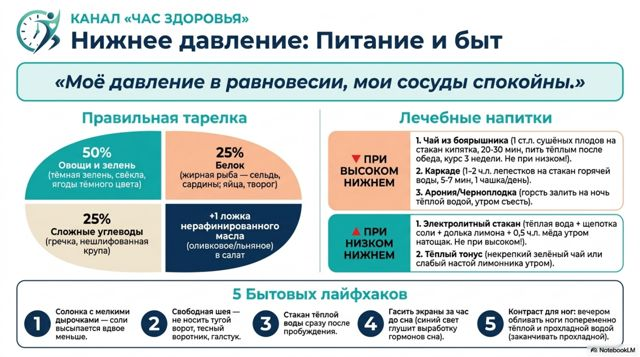
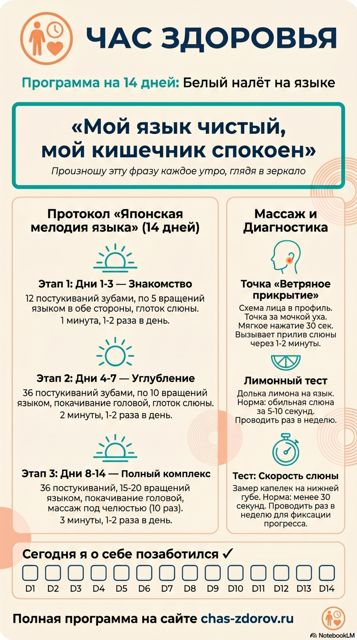
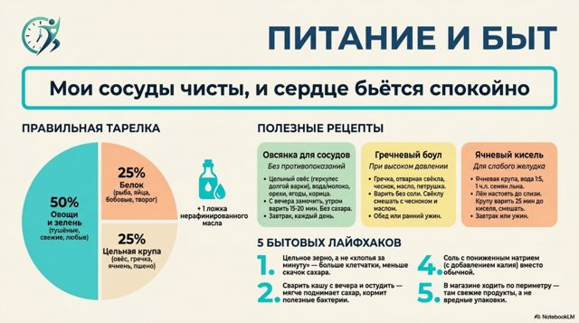

Карточки на холодильник
Короткие памятки к выпускам канала «Час здоровья»: что есть, какие рецепты готовить и какие простые привычки помогают. Выберите тему, скачайте и распечатайте.
Увеличенная простата
Питание, рецепты и бытовые привычки, чтобы спокойно спать ночью

Нижнее давление
Что делать, если нижнее давление высокое или низкое
Сухофрукт для памяти
Как питать мозг после 60 и правильно заваривать сухофрукты

Белый налёт на языке
О чём говорит налёт и как убрать его за две недели

Каши для сосудов
Правильная тарелка и три рецепта каши для сердца и сосудов
По этому запросу карточек пока нет. Новые карточки к выпускам появляются постепенно — следите за Telegram-каналом.
Не нашли карточку к своему выпуску? Мы переносим материалы на новый сайт, карточки добавляются каждый день.
Новые выпуски и карточки — первыми в нашем Telegram-канале.
Открыть Telegram